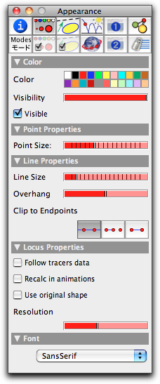
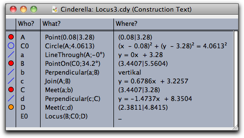

Locus
Constructing Loci

- The mover, a free element whose movement drives the generation of the locus.
- The road, an element incident to the mover. The mover will be moved along the road.
- The tracer, the element whose trace is calculated and presented as a geometric locus.
The mover, road, and tracer must be selected in this order. However, if the mover is either a "point on a line," a "point on a circle," or a "line through a point," then Cinderella automatically recognizes that there is a unique road and selects it for you automatically. You should watch the message line to check what input is required at each stage of a construction. Currently, the following combinations of mover and road are supported:
- mover = point, road = line: The point moves along the line.
- mover = point, road = circle: The point moves along the circle.
- mover = point, road = segment: The point moves along the segment.
- mover = point, road = arc: The point moves along the arc.
- mover = line, road = point: The line rotates around the point.
 |
| A cycloid |
Cinderella also supports the selection of a "line" as the tracer. In this case the envelope of the moving line is calculated.
 |
| The envelope of light rays in a circular mirror |
Loci of elements are real branches of algebraic curves. Cinderella will always try to generate an entire branch.
Inspecting Loci
Compared to Cinderella 1.4, loci have become much more flexible and powerful. Most of the new functionality is accessible through the inspector. Here we give only a rough overview of the possibilities.
In the appearance tab of the inspector a selected locus offers the following control access:
 |
| Appearance of a locus |
Usually, loci are drawn as lines, so only the color, visibility, and line size controls will be relevant.
However, in Cinderella.2 it is also possible to present a locus as sample snapshots of the trace element. In this way, the locus of a moving point is drawn as a sequence of points. Hence in this case, the appearance controls for points will also be relevant. The behavior of the locus can be influenced by the "Locus Properties" section of at the bottom of the inspector. The precise meanings of the three checkboxes are as follows:
- Use original shape: If this box is checked, then instead of a line, a trace of images of the original object is drawn.
- Follow tracers data: This box ensures that the original data of the tracer are taken; in particular, appearance information is also represented by the trace.
- Recalc in animations: This selection forces that in animations the locus is always updated with the actual data and position of the mover.
The resolution slider allows for control of the number of sample points in a trace.
To get a slight impression of the possibilities of the new locus features, consider the example given by the following construction:
 |
| Construction text |
The two pictures below show two different ways of presenting the locus.
 |  |
|
| Plain locus | Colored trace |
The first picture shows the plain locus. After adding the line
D.color=hue(B.angle/pi/2)
in the CindyScript panel, the tracer changes its color in accordance with the angle of the mover. If one then checks the "Use original shape" box and the "Follow tracers data" box, the resulting image is the one on the right. Observe that in this way, one recognizes, the nontrivial way in which the tracer follows the figure eight in this example.
Synopsis
Generate a geometric locus by selecting a mover, a road, and a tracer.
Caution
Sometimes you will notice a short delay when a locus is being calculated. Do not blame your computer or Cinderella (or, even worse, the authors). These delays can be caused by extremely difficult calculations that are necessary to get the correct result (a complete branch of the curve) or the correct screen representation after a movement. We have tried our best to speed up these calculations, but there is a (mathematical) limit: We do not want to sacrifice accuracy for speed.
Page last modified on Thursday 28 of July, 2011 [09:18:37 UTC].
The original document is available at
http://doc.cinderella.de/tiki-index.php?page=Locus